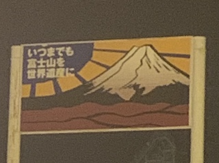
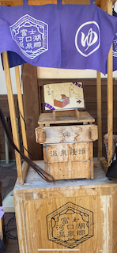
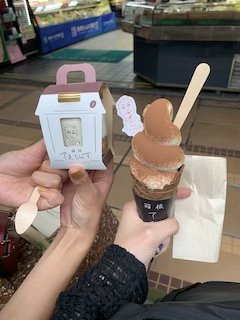

◯富士急ハイランド

撮影者：自分 日時：2022.10.02
富士急ハイランドは大自然に囲まれ、広い園内の様々な場所から富士山の絶景が見える。
この看板は高い位置にあり、歩いているとパッと目をひきやすいため、
富士山のある山梨へ、富士急ハイランドへまた来たい。そう思わせる看板である。
◯富士河口湖

撮影者：自分 日時：2022.10.03
これは河口湖駅改札を出てすぐにある。
駅を出て、この温泉饅頭の蒸し器を見た瞬間、わくわくが止まらない。
◯箱根てゑらみす

撮影者：自分 日時：2022.09.09
箱根てゑらみすのパッケージは箱根にゆかりのある、３人の偉人をモチーフにしている。
そして、箱根の麓「そうけい珈琲」で焙煎されたコーヒー豆を使用している。
箱根づくしのティラミスは箱根を照らす存在となっている。